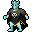

悪魔の血族の魂学者 Demonspawn soul scholar
英語版 CrawlWiki の記事「Demonspawn soul scholar」(0.34 向け、2026-02-19 版)の翻訳です。原文の著者は編集履歴をご覧ください。
悪魔の血族をすべて見るには悪魔の血族の一覧を参照。
| 悪魔の血族の魂学者 6  | |
|---|---|
| HP | 61-124 |
| HD | 15 |
| XP | 1026 |
| 速度 | 10 |
| AC | 15 |
| EV | 10 |
| 意志力 | 60 |
| 攻撃1 | 25（打撃: 通常）
|
| 耐性 | rC+++ rTorm rMiasma |
| 弱点 | 神聖 銀 |
| 生息地 | 陸上 |
| 知能 | 人間並み |
| 使用 | 武器と防具 初期装備 扉を開ける |
| 分類 | 生物・悪魔 |
| 体格 | 中くらい |
| 種類 | 悪魔の血族、悪魔の血族 |
| フラグ | 邪悪 霊視 話す 温血 |

| 氷のように青い鱗に覆われた、半ば定命の者、半ば悪魔の生き物だ。死の神々への献身によって、定命の者の魂の弱点と使い道について深い洞察を得ている。
(著作権のある引用のため本文は省略) |
基本情報
悪魔の血族の魂学者は、パンデモニウムにいる、キクバークッグァに仕える悪魔の血族の死霊術師だ。冷気が効かず、ACが高めで、透明なものが見える。破滅の印の能力を受けると、プレイヤーとその仲間は近接攻撃を受けたときに衰弱、減速、虚弱、盲目の状態にされることがある。